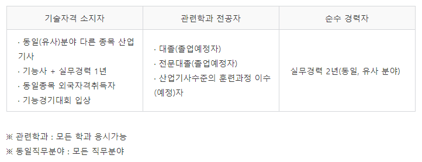
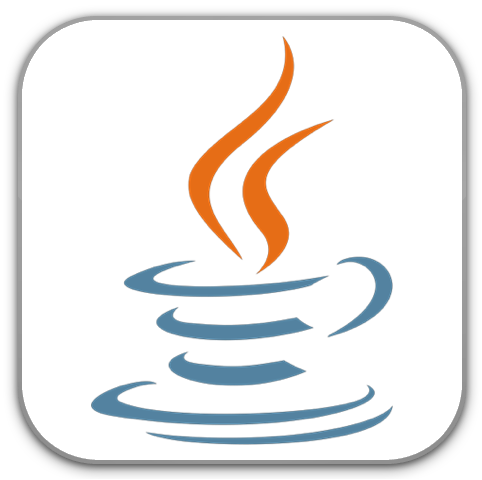
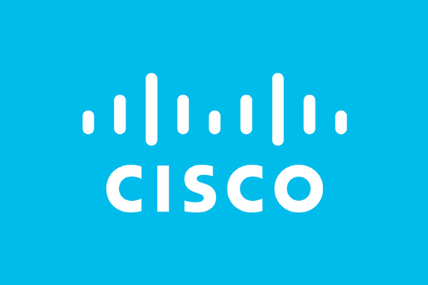

--- 정보처리기사가 무엇인가요? ---
-
정보처리기사는 컴퓨터를 보다 효과적으로 활용하기 위해서 하드웨어뿐만 아니라 정교한 소프트웨어가 필요합니다. 이에 따라 우수한 프로그램을 개발하여 업무의 효율성을 높이고, 궁극적으로 국가발전에 이바지하기 위해서 컴퓨터에 관한 전문적인 지식과 기술을 갖춘 사람을 양성할 목적으로 자격 제도가 제정되었습니다.
-
정보처리 응시 자격
필기시험은 NCS기준 즉, 실기위주의 필기문제가 나온다고 생각해 두시면 됩니다. 필기과목명으로는 소프트웨어 설계· 개발, 데이터 베이스 구축, 프로그래밍 언어활용, 정보시스템 구축 관리를 보게 됩니다. 실기시험은 실기문제항목으로는 데이터 입출력구현,통합구현, 서버구현, 인터페이스구현, 화면 설계, 어플리케이션 테스트 관리, SQL 응용, 소프트웨어 개발보안구축, 소프트웨어패키징까지 실무에서 진행하는 기술 위주로 평가하고 있습니다.
-
자바자격증
자바자격증은 썬 마이크로시스템즈의 제임스 고슬링과 다른 연구원들이 개발한 객체 지향적 프로그래밍 언어입니다. 1991년에 그린 프로젝트라는 이름으로 시작해 1995년 발표했습니다. 처음에는 가전제품 내에 탑재해 동작하는 프로그램을 위해 개발 했지만 현재 웹 애플리케이션 개발에 가장 많이 사용되고 있는 언어들 가운데 하나입니다. 자바자격증 OCAJP/OCPJP 가 있습니다. 숙련된 전문 자바 개발자로서의 기술 능력을 검증하고 증명할 수 있는 시험입니다. 프로그래밍 언어에서 확고한 위치를 확보하고 있는 Java프로그래밍 언어에 대한 기본적인 지식을 기반으로 자바의 능률성을 실행하는 척도로 활용할 수 있습니다. OCAJP/OCPJP는 DataBase로 유명한 오라클 제품 사용자의 관련 업무별 전문 기술 지식 정도를 측정하여 대내외적으로 증명할 수 있습니다. OCAJP/OCPJP 차이는 과거 2018년에 OCJP라고 하는 자바 자격증에서 시험을 치르는 과목이 바뀌게 되면서 자격증이 두개의 종류로 나누어졌습니다. OCAJP와OCPJP의 가장 큰 차이점은 난이도면에 대한 차이라고 볼 수 있습니다. OCAJP는 자바에 대한 명령어 위주 문제가 나오며, OCPJP는 JDBC를 통한 DataBase구축 및 고급설계 등과 같은 문제들이 출제됩니다.-
시스코자격증
시스코는 1984년 스탠포드의 연구 엔지니어로 재직하며 컴퓨터 공학과의 시설을 운영 및 관리하는 책임자였던 레오나드 보삭과 경영대학원의 컴퓨터 시설 관리 책임자였던 산드라 샌디 러너가 서로 다른 컴퓨터 시스템을 하나의 네트워크로 연결하는 라우터를 개발하면서 설립되었습니다. 네트워킹 기술을 통해 정보 공유를 꿈꾸는 회사의 비전에 따라 '환태평약으로 가는 길목' 이라고 불리는 도시, '샌프란시스코'를 축약해 '시스코(CISCO)'로 사명을 정했습니다. CCNA(Cisco Certified Network Associate)는 컴퓨터 네트워크 전문가 양성을 목적으로 시행 된 Cisco 기술 고인 프로그램인 CCC의 하나로 네트워크 설치 및 운영 능력 및 SOHO 시장에 필요한 초급 단계의 네트워킹 지식 습득에 관한 교육과정을 말합니다. 또한 라우터와 스위치를 사용하여 네트워크를 구성하는 능력과 네트워크 운영상의 여러가지 트러블슈팅 능력을 시험하는 자격증입니다. 소규모 네트워크에서 설치, 운영, 문제 해결이 가능하도록 WAN 연결, 기초 보안과 무선연결, 기초적인 라우팅과 스위칭, TCP/IP와 OSI모델, IP Addressing, WAN 기술, IOS의 구성과 운영, RIPv2, static과 기본 라우팅, NAT와 DCP, 간단한 네트워크 구성 등 기초적인 네트워킹을 포함하고 있습니다.CCNP는 라우터와 스위치 등의 장비르 이용해 네트워크를 구성하는 능력을 평가하며, 네트워크 운영상의 여러가지 문제를 해결하는 능력에 관한 인증입니다. 중규모의 네트워크에서 설치, 운영, 문제해결을 해야 하며 VLSM과 IP Addressing, VLNL을 이용한 스위치 네트워크, VLAN의 구성과 문제해결, VTP/RSTP/OSPF/EIGRP 프로토콜, IP 경로설정, Access List를 이용한 트래피제어, NAT와 DHCP, Point - to - Point 연결과 Frame Relay 연결 등의 내용을 포함하고 있습니다. 소규모 네트워크에서 설치, 운영, 문제해결이 가능하도록, WAN 연결, 기초 보안 문선 연결, 기초적인 라우팅과 스위칭, TCP/IP와 OSI모델, IP Addressing, WAN 기술, IOS의 구성과 운영, RIPv2, static과 기본 라우팅, NAT와 DCP, 간단한 네트워크 구성 등 기초적인 네트워킹을 포함하고 있습니다.
-